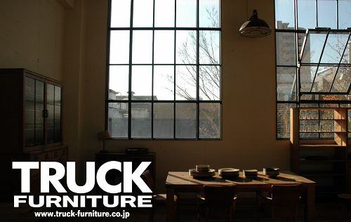

今晚央视一台的《焦点访谈》访问国家气象局，话题是：“这个冬天有多冷？”这两天气温骤然下降，音乐、电影、书刊、橘色灯光、热茶与甜点让人万分留恋在家的温暖。
想为家里增添更多浓郁亲近的生活气息，所以买了《十二味生活设计》回家读，结果仿佛接受了人生观的再教育。这本书中除了各位大师的作品，更让我感兴趣的是他们的日常生活安排及世界观、价值观，看得有点小兴奋。这里摘抄一些作为分享。
编辑手记：在日复一日平淡的生活里做着自己喜欢的事，并不是为了赚钱、并不是为了他人的目光、并不是为了表现自己，努力生活是为了实践自己，这让我们看见了另一种可能，平平淡淡的生活也能有简简单单的幸福，而且绝对不缺热情与乐趣。

1、一天的时间大概是怎么过的？
2、你觉得人生最重要的事是什么？
***大桥布-插画家
1、每天5点起床，洗头之后做早餐和准备便当。6点之后和先生一起带狗去散步。之后是早餐时间。之后做洗衣、做一点家务之类的事，9：20离开家开车到公司。到公司约10点，开始工作到12点。中午休息一小时，和助手边吃便当边聊天，一般工作到晚上7点。因为要准备晚饭和便当的食材，所以回家前会先到超市买菜。晚饭后会看9点的新闻，一般约10点或10点半睡觉。
2、拥有爱的能力。
***黄濑德彦&唐津裕美-TRUCK家具店（夫妻店）
1、早晨7点后起床，然后带4只狗去去散步，回来后喂猫和狗吃饭，然后吃过早饭后，10点左右员工来上班，我会下去看一下进度，再因那天的状况而定，现在想事情的时间比较多，工作和生活没有分界点，所以有时候也是回到家里想东西，有些工作已经可以安心交给手下人去做。
***冈尾美代子-造型师
1、6点的闹钟，但总是8点才起床，然后到现在合作的店里开始工作，直到晚上8点。现在期许自己每天能12点前上床睡觉，不过都拖到一点。
2、保持充满动力的态度。
***皆川明-服装设计师
1、7点起床，8点送女儿们去上课，10点左右进公司，大概在晚上8点左右进行一些会议和讨论，8点后开始做设计的工作，直到晚上12点，离开公司回到家后，大约2点左右睡觉。
2、以前认为重要的事，现在反而不觉得那么特别。在每一段时光里，我不去评断好或不好，就是去度过去感受。有时候看起来不幸运的事，其实是支持未来的幸福，也因为这件事受到其他人的帮忙，感受到人情温暖。有时候对自己来说是好的事，但其实对旁人造成很大的困扰，这样来说也不是一件好事了。现在的我觉得重要的就是珍惜自己的感受，享受活着的感觉。
***Seki Yurio-平面设计师，书籍设计师
1、8点半左右起床，然后花半小时到阳台照顾植物和准备给附近的小鸟来吃的落花生，也就是我所作的biotope（生物栖息地）。还会有种子飞来我准备的土壤中长大喔！然后10点半左右进公司，首先会看看E-MAIL，回信和发信等，12点午餐过后，下午就是很多的开会和提案等，中间有些时间就执行设计工作，然后到晚上就是完全做设计的工作，早的话到10点，一般是12点下班。
2、爱。我很重视和朋友、家族还有工作伙伴之间的关系。
***村田朋泰--影象动画，人偶动画师
1、早上会先慢跑一个半小时，冲澡后进公司，先确认邮件，然后与工作人员讨论工作，之后就是自己的发想时间，通常都是好几个东西重叠着做，比如想故事，或画脚本；有个展时期，就画画等。
2、有梦想蓝图。
***Goma-料理创作家
1、11点在工作室集合，开始各自在房间里的工作，到了下午2、3点一定会先有个人去泡茶休息，这是就是大家的下午茶时间，吃吃点心喝喝茶，沟通一下想法，一般工作到约7点，如果隔天有拍摄的重要工作，就会加班熬夜。
2、开心地做自己喜欢的事。诚实面对自己，不逞强，自然地活着。珍惜身边的人。
*********************************************************
看看这几位大师每天的生活，精彩背后的平凡，和你我一样，且每天大部分时间都消熬在工作中。我想我需要思考的不是如何获得他们的技能，而要思考如何在平淡中过出更加温暖幸福的滋味。“诚实面对自己，不逞强，自然地活着。珍惜身边的人。”只要有家在，无论这个冬天有多冷。